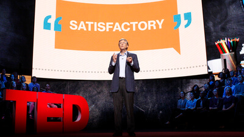

Bill Gates
(William Henry Gates III; Seattle, Washington, 1955) Informático y empresario estadounidense, fundador de Microsoft. La fortuna de este precoz programador, que no llegó a terminar sus estudios y que a los 31 años era ya multimillonario, procede del éxito arrollador de su sistema operativo, el MS-DOS (1981), que evolucionaría hasta convertirse en el popular Windows 3.1 (1992) y daría lugar a las sucesivas versiones de este sistema operativo, omnipresente hasta nuestros días en la inmensa mayoría de los ordenadores portátiles y de sobremesa.
Es difícil juzgar hasta qué punto fue suerte o genial intuición advertir que, en la eclosión de la informática de consumo, había un mercado tan valioso en la fabricación de ordenadores (hardware) como en la creación del sistema operativo y de los programas que habían de emplearse en ellos (software). Lo cierto es que, mientras los fabricantes competían duramente por el hardware, una serie de circunstancias llevaron a que su sistema operativo se extendiese hasta quedar sin apenas competencia. De hecho, a menudo se ha acusado a Microsoft de prácticas monopolísticas, y a su fundador de falta de verdadera creatividad. Pero, aun admitiéndolo, deberá reconocerse que su contribución efectiva a la popularización de la informática (y a la vertiginosa escalada tecnológica que ha conllevado) fue inmensa.
Bill Gates nació en una familia acomodada que le proporcionó una educación en centros de élite como la Escuela de Lakeside (1967-73) y la Universidad de Harvard (1973-77). Siempre en colaboración con su amigo Paul Allen, se introdujo en el mundo de la informática formando un pequeño equipo dedicado a la realización de programas que vendían a empresas o administraciones públicas.
En 1975 se trasladaron a Alburquerque (Nuevo México) para trabajar suministrando a la compañía MITS una serie de programas susceptibles de ser utilizados con el primer microordenador, el Altair, para el cual habían desarrollado una versión del lenguaje de programación BASIC. Ese mismo año fundaron en Alburquerque su propia empresa de producción de software informático, Microsoft Corporation, con Bill Gates como presidente y director general. Su negocio consistía en elaborar programas adaptados a las necesidades de los nuevos microordenadores y ofrecérselos a las empresas fabricantes más baratos que si los hubieran desarrollado ellas mismas. Cuando, en 1979, Microsoft comenzó a crecer (contaba entonces con dieciséis empleados), Bill Gates decidió trasladar su sede a Seattle.
A principios de la década de 1970, la invención del microprocesador permitió abaratar y reducir el tamaño de las gigantescas computadoras existentes hasta entonces. Era un paso decisivo hacia un sueño largamente acariciado por muchas empresas punteras en el sector tecnológico: construir ordenadores de tamaño y precio razonable que permitiesen llevar la informática a todas las empresas y hogares. El primero en llegar podría iniciar un negocio sumamente lucrativo y de enorme potencial. Era impensable que una empresa como Microsoft, dedicada solamente al software (sistemas operativos y programas) pudiese jugar algún papel en esta carrera entre fabricantes de hardware, es decir, de máquinas.
Y así fue al principio: una competición entre fabricantes de ordenadores no demasiado honesta, pues hubo más de un plagio. A mediados de los años setenta, en un garaje atestado de latas de aceite y enseres domésticos, Steve Jobs y Stephen Wozniak diseñaron y construyeron una placa de circuitos de computadora, toda una muestra de innovación y de imaginación. Al principio tenían la intención de vender sólo la placa, pero pronto se convencieron de la conveniencia de montar una empresa, Apple, y vender ordenadores. En 1977 empezaron a comercializar la segunda versión de su computadora personal, el Apple II, que se vendía con un sistema operativo también creado por Apple: un hito histórico que marca el nacimiento de la informática personal.
Bastante ingenuamente, Apple cometió el error de dar a conocer a otras empresas las especificaciones exactas del Apple II. Para desarrollar su primer ordenador personal, la empresa IBM copió y adaptó la arquitectura abierta del ordenador de Apple y escogió el microprocesador Intel 8088, que manejaba ya caracteres de 16 bits. De este modo, en 1981, IBM pudo lanzar su primer PC (Personal Computer, ordenador personal). Pero el sistema operativo de su PC, imprescindible para su funcionamiento, no había sido creado por IBM, sino por Microsoft. Un año antes, en 1980, Bill Gates había llegado a un acuerdo con IBM para suministrarle un sistema operativo adaptado a sus ordenadores personales, el MS-DOS, que desde 1981 iría instalado en todos los ordenadores de la marca.
IBM obtuvo un gran éxito comercial con su PC. Con un precio que, con el paso de los años, sería cada vez más asequible, cualquier consumidor podía comprar una computadora de tamaño reducido, cuyas aplicaciones no hacían sino aumentar, y que abarcaban tanto el ocio como múltiples actividades laborales. Pero IBM también cometió errores en el uso de la patente. Muchas empresas, conscientes del gran boom que se avecinaba, se lanzaron a la fabricación y comercialización de PC compatibles, llamados en la jerga informática clónicos, más económicos que los de IBM.
El mercado se inundó de ordenadores personales compatibles con el de IBM que funcionaban con el sistema operativo de Microsoft, que podía venir instalado o adquirirse por separado, porque, aunque IBM lo había encargado, el MS-DOS no era de sus propiedad: había cedido los derechos de venta a Microsoft. Por otro lado, aparte de las empresas y administraciones, no siempre los usuarios adquirían la licencia del MS-DOS. Era sencillísimo conseguir una copia e instalarlo sin pagar, hecho que favoreció aún más su difusión.
Aún existían otra opciones, pero se quedaron en minoritarias: gracias a su bajo coste, la combinación PC más MS-DOS acabó copando el mercado y convirtiéndose en el estándar. Mientras los fabricantes de ordenadores intentaban reducir costes, entregados a una guerra de precios de la que nadie pudo sacar una posición dominante, una empresa de software, la de Bill Gates, se hizo con prácticamente todo el mercado de sistemas operativos y buena parte del de programas.
A partir de ese momento, la expansión de Microsoft fue espectacular. Y no sólo porque los PC necesitaban un sistema operativo para funcionar, sino también porque los programas y aplicaciones concretas (un procesador de textos, un hoja de cálculo, un juego) se desarrollan sobre la base de un sistema operativo en concreto, y ese sistema era el MS-DOS. Las distintas empresas de software (y entre ellas la misma Microsoft) podían desarrollar, por ejemplo, distintos procesadores de textos, compitiendo entre ellas para agradar al usuario. Pero como la inmensa mayoría de usuarios tenía MS-DOS, desarrollaban programas para funcionar con MS-DOS, y acababan por hacer un favor a Microsoft, que podía presumir de que sobre su sistema operativo podían funcionar todos los programas imaginables: los suyos y casi todos los de la competencia. Esa retroalimentación viciosa era el fabuloso activo de Microsoft, y Bill Gates supo conservarlo.
El MS-DOS, sin embargo, era un entorno poco amigable, cuyo manejo requería el conocimiento de comandos que se introducían a través del teclado. Con el lanzamiento en 1984 del ordenador personal Macintosh, Apple pareció tomar de nuevo la delantera. Su sistema de ventanas supuso un salto cualitativo; su interfaz simulaba la distribución de una mesa de trabajo por medio de iconos. Un pequeño aparato, el ratón, cuyo movimiento se reflejaba en la pantalla con un icono parpadeante, permitía recorrerla en busca del documento o programa buscado. En lugar de tener que recordar los comandos de cada una de las operaciones y teclearlos en cada momento, bastaba acudir a los listados de acciones posibles y hacer clic con el ratón sobre la opción elegida.
Por el momento, aquellas innovaciones no parecían hacer sombra a Bill Gates. En 1983 Paul Allen dejó Microsoft, aquejado de una grave enfermedad. Y cuando, en 1986, Microsoft salió a la Bolsa, las acciones se cotizaron tan alto que Bill Gates se convirtió en el multimillonario más joven de la historia. Volcado en un proceso de innovación tecnológica acelerada, y en su caso imitando más el Macintosh de Apple que innovando, Gates lanzó una interfaz gráfica para MS-DOS llamada Windows: Windows 3.0 en 1990 y Windows 3.1 en 1992.
No era, en realidad, un nuevo sistema operativo, sino, como se ha dicho, una interfaz gráfica con ratón, iconos y ventanas bajo la que seguía corriendo el viejo MS-DOS, pero fue muy bien recibido por los usuarios, que disponían finalmente de un sistema tan intuitivo como el de Macintosh pero mucho más económico al funcionar sobre un PC, gracias a lo cual se impuso fácilmente en el mercado. El enorme éxito llevó a la verdadera renovación que fue Windows 95 (en cuya campaña de promoción a escala mundial asumió el propio Gates el papel de profeta de la sociedad cibernética como personificación de Microsoft), al que seguirían Windows 98 y las sucesivas versiones de este sistema operativo, de entre las que sobresale Windows XP (2001), el primero cien por cien de nuevo cuño, que dejaba completamente de lado el antiguo MS-DOS.
Entretanto, el negocio no había cesado de crecer (de los 1.200 empleados que tenía en 1986 hasta más de 20.000 en 1996), y, con la generalización de Windows, Bill Gates pasó a ejercer un virtual monopolio del mercado del software mundial, reforzado por su victoria en el pleito de 1993 contra Apple, que había demandado a Microsoft por considerar que Windows era un plagio de la interfaz gráfica de su Macintosh. Desde 1993 embarcó a la compañía en la promoción de los soportes multimedia, especialmente en el ámbito educativo.
Además de Windows, muchos de los programas y aplicaciones concretas más básicas e importantes producidas por la empresa (el paquete ofimático Microsoft Office, por ejemplo) eran siempre las más vendidas. Surgieron muchas voces críticas que censuraban su posición monopolística, y en numerosas ocasiones Microsoft fue llevada por ello a los tribunales por empresas competidoras y gobiernos, pero nada logró detener su continua ascensión.
En 2008, Bill Gates abandonó definitivamente Microsoft para dedicarse íntegramente a sus labores en la fundación, que había recibido el Premio Príncipe de Asturias de Cooperación Internacional en 2006. Si antes fue una figura discutida, esta nueva etapa como filántropo despierta más bien unánime admiración: al igual que lo fue su empresa, su fundación es la más grande del mundo por lo que respecta a la cuantía de sus aportaciones económicas a toda clase de programas de ayuda, investigación y desarrollo.